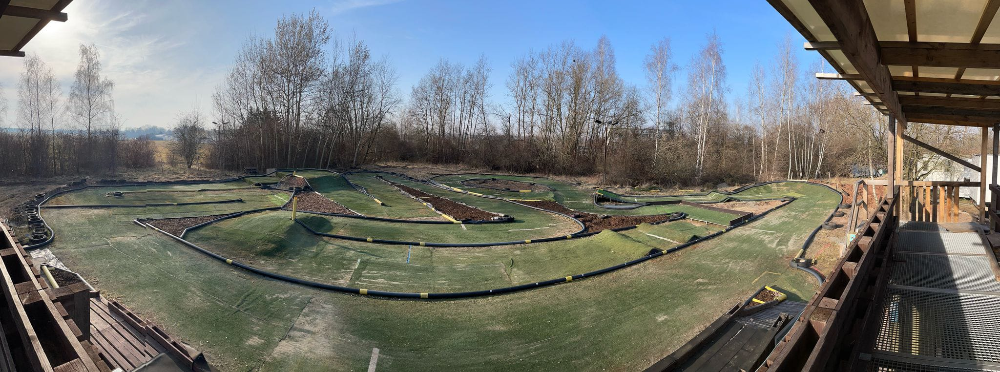

OffroadEine andere Art von Herausforderung
Im Offroad-Bereich treffen wechselnde Bedingungen auf Fahrtechnik und Fahrzeugabstimmung. Detaillierte Strecken- und Ausstattungsangaben werden vom Verein ergänzt.
Vor dem Training
- Streckenstatus und Trainingsmöglichkeit vorab klären
- Fahrzeug auf sicheren Zustand prüfen
- Regeln und Anweisungen vor Ort beachten
Zeitnahme
Live-Informationen
Die Anzeige von Streckenstatus und Zeitnahme wird erst aktiviert, wenn die technische Verbindung eingerichtet ist.
Aktuell werden keine Live-Daten angezeigt.